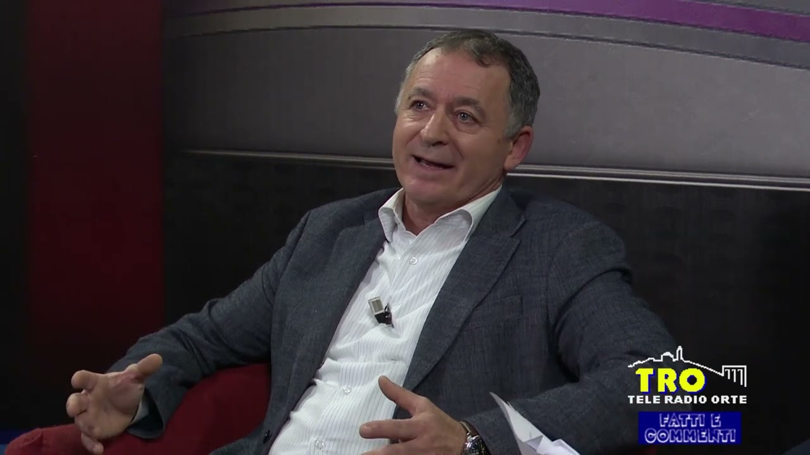
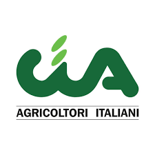
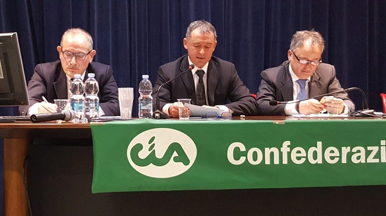

Intervista al presidente della Confederazione Italiana Agricoltura Viterbo e Rieti, Sergio Del Gelsomino

Abbiamo rivolto alcune domande al presidente della Confederazione Italiana Agricoltura Viterbo e Rieti, Sergio Del Gelsomino sulla situazione produttiva stagionale e sulle esigenze del mondo agricolo, in particolare dei nostri territori del Centro Italia.
Presidente Del Gelsomino, può delinearci l‘andamento della produzione agricola dei nostri territori in relazione alle problematiche ed alle esigenze del mondo agricolo ?
Siamo a metà anno e possiamo delineare alcuni bilanci sulle produzioni agricole dei nostri territori.
Ottima la raccolta degli asparagi e delle orticole, in special modo sul litorale tirreno, la raccolta dei foraggi non è stata delle migliori ed il prezzo e‘ in flessione.
Ci stiamo preparando alla raccolta dei cereali a paglia, sembra una stagione non eclatante dal punto di vista delle quantità, ma ciò che ci preoccupa di più è il prezzo.
Come produttori non riteniamo possibile che con una richiesta elevata di pasta made in Italy nel mondo e di pane che consumiamo tutti i giorni sulle nostre tavole il prezzo della materia prima non salga (a differenza del costo del prodotto sugli scaffali) per dare una giusta remunerazione agli agricoltori!
Ogni giorno arriva grano duro e/o tenero dall’estero nei nostri molini che lo lavorano e lo commercializzano in pasta e farine, se questo fenomeno non si può contrastare, riteniamo opportuno magari regolare e controllare se a monte siano stati effettuati gli stessi controlli che subiscono le nostre produzioni.
Altrimenti sono inutili i limiti imposti dall’Europa sull‘utilizzo di fertilizzanti e fitofarmaci se poi più del 50-60% del prodotto importato entra senza il rispetto delle stesse regole, fermarlo ai porti è un’utopia, magari tracciarlo e controllarlo potrebbe essere opportuno!

I dazi imposti dall‘America stanno influenzando la produzione e l’esportazione della produzione agricola italiana e in particolare della Tuscia ?
Da inizio anno la problematica dei dazi ci tiene in ansia in quanto è stato gia applicato, il 10% dei i prodotti vinicoli, per la prossima raccolta del vino e di tutti i prodotti che verranno esportati anche se prevediamo che le nostre provincie di Rieti e Viterbo abbiano meno contraccolpi.
Il nuovo CSR (complemento di sviluppo rurale) che è Stato pubblicato ha fatto registrare un grande numero di domande, ciò dimostra che il settore è vivo e pronto ad investire per migliorare le nostre aziende è renderle più aggiornate al tempo che viviamo con macchine e attrezzature moderne e sempre meno inquinanti e più produttive.
Una vostra valutazione sull‘ipotesi di localizzazione nella Tuscia del deposito di scorie nucleari.
Come CIA Confederazione Italiana dell‘Agricoltura siamo sempre stati presenti sin dalla prima ora per dimostrare la nostra contrarietà al deposito delle scorie nucleari, tale deposito sarebbe uno schiaffo all’integrità, alla bellezza dei nostri territori, ancora oggi incontaminati.
Lo ribadisco per l’ennesima volta e le guerre di questi giorni lo dimostrano è folle fare un deposito di scorie nucleari a 60 km da Roma, sarebbe un bersaglio che un invasore potrebbe attaccare mettendo a rischio le vite di milioni di persone.
Vuol fornire ai lettori una descrizione dei servizi offerti dalla Vostra Confederazione agli associati ed ai cittadini ?
Confermo che i nostri uffici CIA, sparsi in quasi tutti i comuni della provincia, sono a disposizione degli associati e dei cittadini per effettuare tutti i servizi loro necessari, dalla Pac, alla dichiarazione dei redditi, non trascurando l’assistenza previdenziale ai nostri pensionati .
A questo proposito vorrei soffermarmi sulle pensioni ridicole dei nostri agricoltori, più volte è stato chiesto ai governi di porre rimedio a questa discrepanza tra le pensioni degli agricoltori e gli altri settori, ma ciò non è stato ancora fatto.
Un‘ultima sua valutazione sul contributo degli Agricoltori Per l‘affermazione del Made in Italy, in termini di qualità nelle produzioni e nella ricettività delle nostre campagne e dei nostri borghi.
Concludo ricordando che se tutti parlano del Bel Paese Italia, dei nostri bellissimi paesaggi, se tanti italiani percorrono le strade attraverso le campagne con la vista meravigliosa dei nostri campi coltivati, se sempre piu‘ turisti stranieri visitano il nostro paese nei borghi e negli agriturismi, apprezzando e degustando vini e cibi genuini, è perché tutte le mattine un agricoltore li ha curati con amore !

Al centro il presidente della Confederazione degli Agricoltori Italiani CIA Lazio Nord di Viterbo e Rieti, Sergio Del Gelsomino
Stefano Stefanini